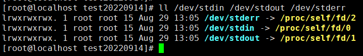
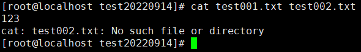
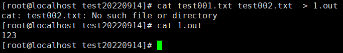
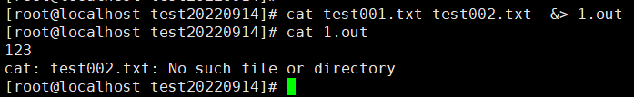
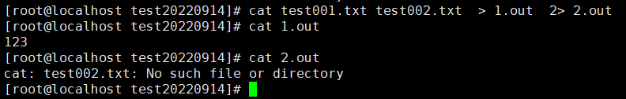
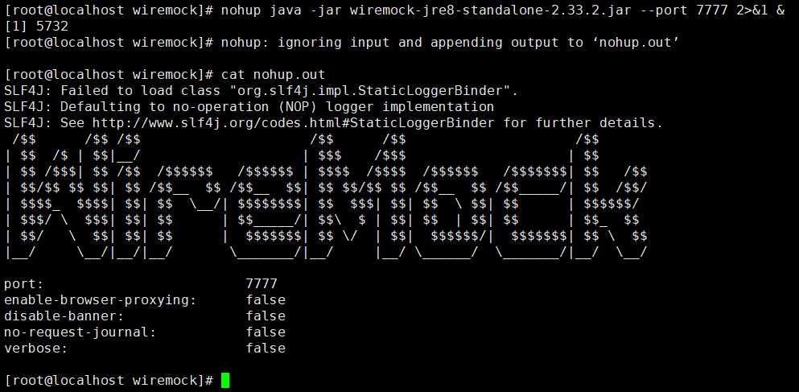
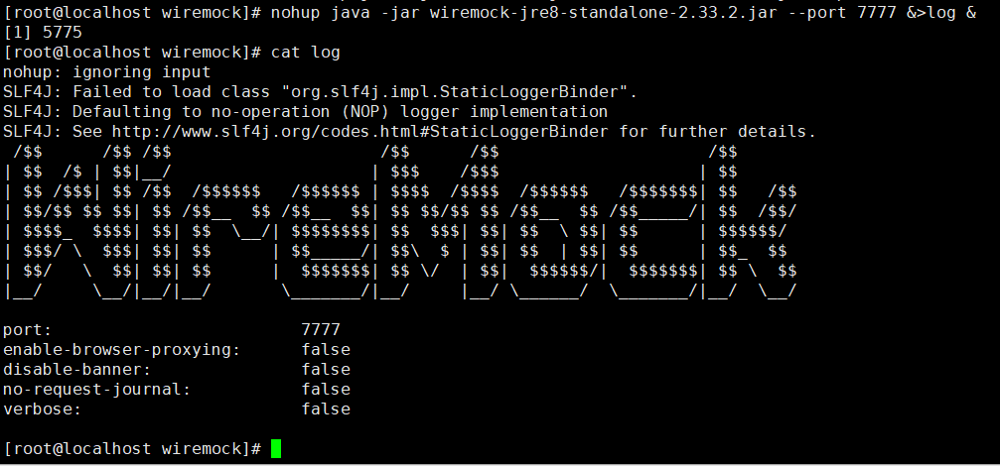
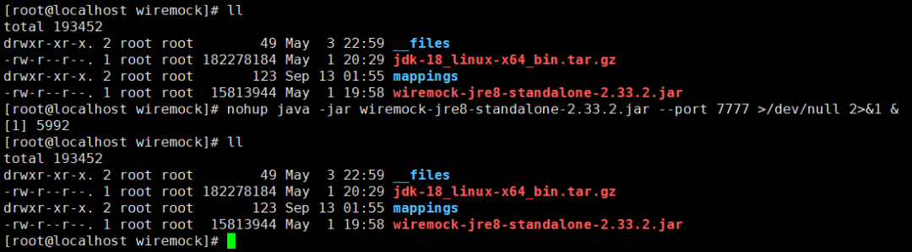
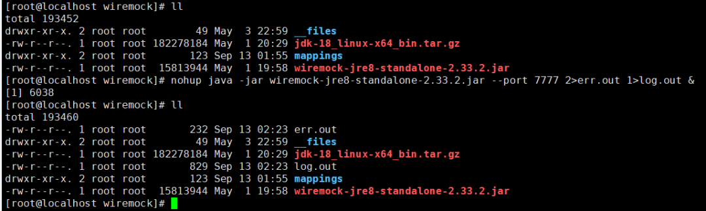

Linux的标准输入和输出
一、Linux提供了三种输入/输出通道给程序
在linux中，每个进程都会有三个文件，并且这三个文件会进行重定向处理:
1. 标准输入(STDIN) - 缺省为键盘
2. 标准输出(STDOUT) - 默认为终端窗口
3. 标准错误(STDERR) - 默认为终端窗口

4. 2>&1中的数字就是上面重定向后的数字
0： 表示键盘输入
1：将信息输入到屏幕(一般linux命令都是默认为1)
2：将信息输入到错误输出
二、标准输出和标准错误能重定向到文件中:
1. 命令 > 文件：重定向标准输出到文件
2. 命令 2> 文件：重定向标准错误到文件
3. 命令 &> 文件：重定向所有的输出到文件
ps：使用>时会将文件内容会覆盖，使用>>时文件内容追加
三、示例：重定向输出给一个文件示例
当前文件夹存在内容为hello world的test001.txt的文件，但是没有test002.txt
1. cat两个文件时将标准输出与标准错误至控制台：
1 | |

2. 重定向标准输出到文件，不包含标准错误
1 | |

3. 重定向标准错误到文件
1 | |

4. 重定向准输出与标准错误输出至文件
1 | |

5. 重定向准输出与标准错误输出至两个不同的文件
1 | |

四、常见用法:
1. 后台程序运行并，并将日志保存至默认地址nohup.out：
1 | |
nohup 命令含义：运行由 Command参数和任何相关的 Arg参数指定的命令，忽略所有挂断（SIGHUP）信号。在注销后使用 nohup 命令运行后台中的程序。要运行后台中的 nohup 命令，添加 & （ 表示“and”的符号）到命令的尾部
如果不将 nohup 命令的输出重定向，输出将附加到当前目录的 nohup.out 文件中。如果当前目录的 nohup.out 文件不可写，输出重定向到 $HOME/nohup.out 文件中

2. 同上的命令简化命令，日志保存至log日志内：
1 | |

3. 后台程序运行，并在日志输入至黑洞，即不保存日志：
1 | |

4. 后台程序运行，分别将标准输出与标准错误写入不同的日志文件内。

本博客所有文章除特别声明外，均采用 CC BY-SA 4.0 协议 ，转载请注明出处！